어서요세요 2상sung욕za입니다.
----------------------------------유재훈 대표(代表)의 인사말----------------------------------
--- 사진제공 박희승 ---
안녕하십니까. 2상sung욕za 사이트(이하, 본사이트라고 칭함.)의 총괄을 맡고 있는 유재훈이라고 합니다.
본사이트는 저희 멤버들의 욕망을 마음껏 분출 시키기 위해서 만들어진 사이트입니다. 각자의 덕질을 하고
각자의 목표를 향해 열심히 달려가는 저희 멤버들이 삶이 지칠 때마다 한 번씩 들리면서 쉴 수 있는 공간이
됐으면 좋겠다고 생각하고 있습니다. 여러분들은 목표를 향해 달리다가 넘어지기도 할 것이며, 탈골이 되거
나 피가 나기도 할 겁니다. 하지만 여러분은 다시 일어나 달릴 수 있는 사람이라는 것을 저는 잘 알고 있습
니다. 계속 넘어지고 일어나기를 반복하다보면 분명 지치는 때도 오겠지요. 그럴 때면 이곳을 찾아주십시오.
여러분들의 기나긴 인생이라는 마라톤에서 쉬어갈 수 있는 물 보급지점이 될 것입니다. 이곳에서 마른 목을
축이고 거친 숨을 고른 뒤에 다시 달린다면 여러분은 飛上(비상)할 것입니다.
관계자 소개
총괄감독 : 유재훈
제작 : 이민준
쟈료제공 : 박희승, 유재훈, 황수명
그 밖에 인물 : 우진형, 정은수
*주의사항*
해당사이트는 보안 기능이 갖춰지지 않았습니다.
그러니 주소관리는 알아서 잘 해주실 거라 믿습니다^^
미안하다 이거 보여주려고 어그로끌었다.. 나루토 사스케 싸움수준 ㄹㅇ실화냐?
진짜 세계관최강자들의 싸움이다.. 그찐따같던 나루토가 맞나? 진짜 나루토는 전
설이다..진짜옛날에 맨날나루토봘는데 왕같은존재인 호카게 되서 세계최강 전설적
인 영웅이된나루토보면 진짜내가다 감격스럽고 나루토 노래부터 명장면까지 가슴울
리는장면들이 뇌리에 스치면서 가슴이 웅장해진다.. 그리고 극장판 에 카카시 앞
에운석날라오는 거대한 걸 사스케가 갑자기 순식간에 나타나서 부숴버리곤 개간지
나게 나루토가 없다면 마을을 지킬 자는 나밖에 없다 라며 바람처럼 사라진장면은
진짜 나루토처음부터 본사람이면 안울수가없더라 진짜 너무 감격스럽고 보루토를
최근에 알았는데미안하다.. 지금20화보는데 진짜 나루토세대나와서 너무 감격스럽
고 모두어엿하게 큰거보니 내가 다 뭔가 알수없는 추억이라해야되나 그런감정이 이
상하게 얽혀있다.. 시노는 말이많아진거같다 좋은선생이고..그리고 보루토왜욕하냐
귀여운데 나루토를보는것같다 성격도 닮았어 그리고버루토에 나루토사스케 둘이싸워
도 이기는 신같은존재 나온다는게 사실임?? 그리고인터닛에 쳐봣는디 이거 ㄹㅇㄹㅇ
진짜팩트냐?? 저적이 보루토에 나오는 신급괴물임?ㅡ 나루토사스케 합체한거봐라 진
짜 ㅆㅂ 이거보고 개충격먹어가지고 와 소리 저절로 나오더라;; 진짜 저건 개오지는
데.. 저게 ㄹㅇ이면 진짜 꼭봐야돼 진짜 세계도 파괴시키는거아니야.. 와 진짜 나루
토사스케가 저렇게 되다니 진짜 눈물나려고했다.. 버루토그라서 계속보는중인데 저거
ㄹㅇ이냐..? 하.. ㅆㅂ 사스케 보고싶다.. 진짜언제 이렇게 신급 최강들이되었을까
옛날생각나고 나 중딩때생각나고 뭔가 슬프기도하고 좋기도하고 감격도하고여러가지
감정이 복잡하네.. 아무튼 나루토는 진짜 애니중최거명작임..
- 자료제공 박희승 -
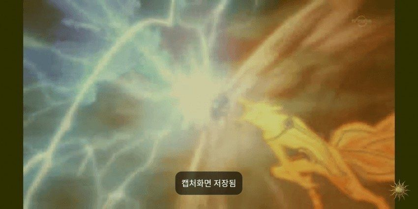
- 자료제공 박희승 -
그럼 다같이 감상해보도록 하자.
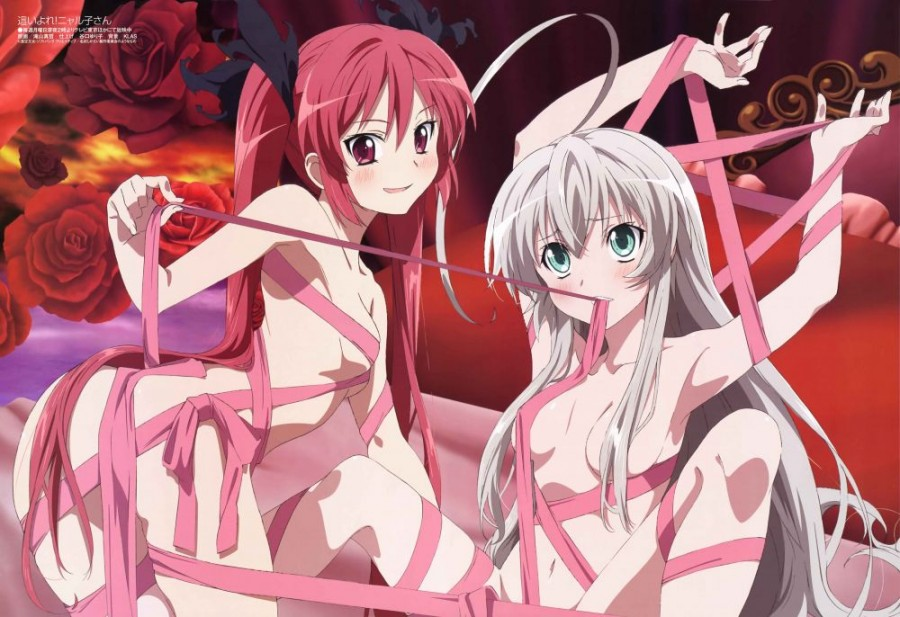
- 자료제공 박희승 -
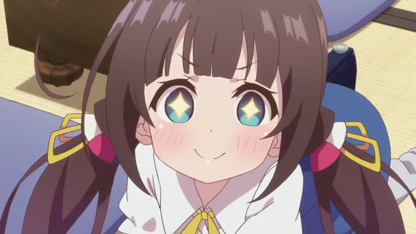
- 자료제공 박희승 -
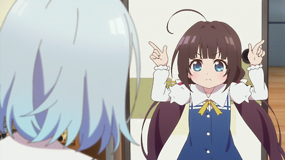
- 자료제공 박희승 -

- 자료제공 박희승 -

- 자료제공 박희승 -

- 자료제공 박희승 -
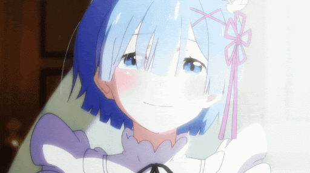
- 자료제공 박희승 -
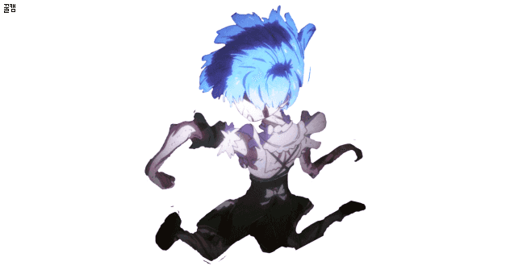
- 자료제공 박희승 -
이오리가 귀여운 이유
이오리가 귀여운 이유는 디시인사이드같은 곳에서도 논해지고 있는 주제이다.
예시1)
예시2)
필자는 이렇게 생각한다. 그냥 이오리라서 귀여운게 아닐까? 그리고 수명이 아내다.
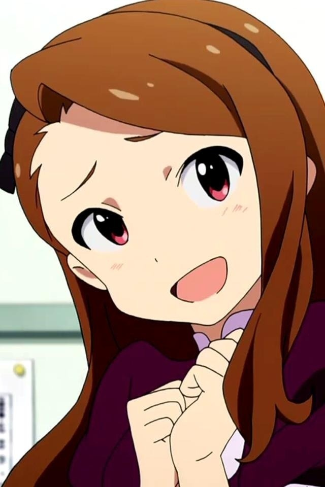
- 자료제공 황수명 -
대표 유재훈
그는 2상sung욕za의 대표이며, 멤버들 사이에서는 "전설"로 통한다. (재훈이 사진 모집 받음)
밑에는 그의 일상적인 모습이다.
1. 혀를 자랑하고 있는 모습이다. 혀색이 건강하다.
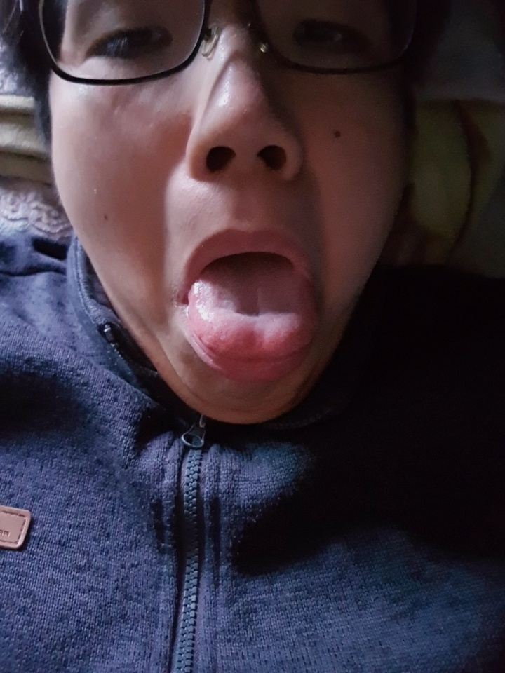
- 사진제공 박희승 -
2. 업무상 충기에 방문한 모습이다. 정보에 따르면 충기 졸업식에서 훈화를 했다고 한다.
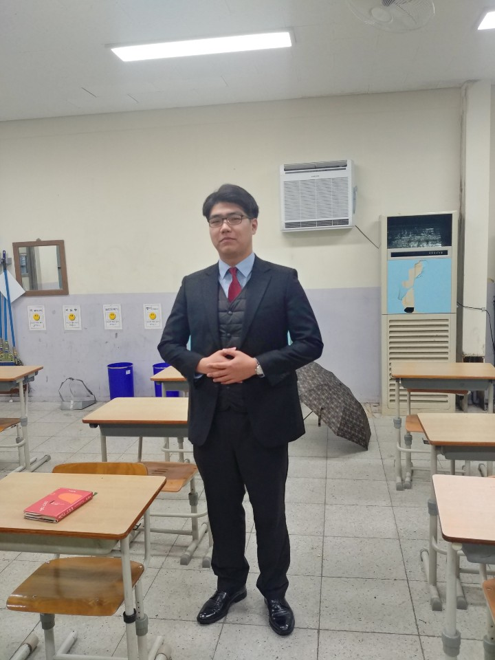
- 사진제공 유재훈 -
3. 자신의 직장에서 있었던 회식에 참석했던 사진이다. 후배들에게 조언을 해주고 있다.
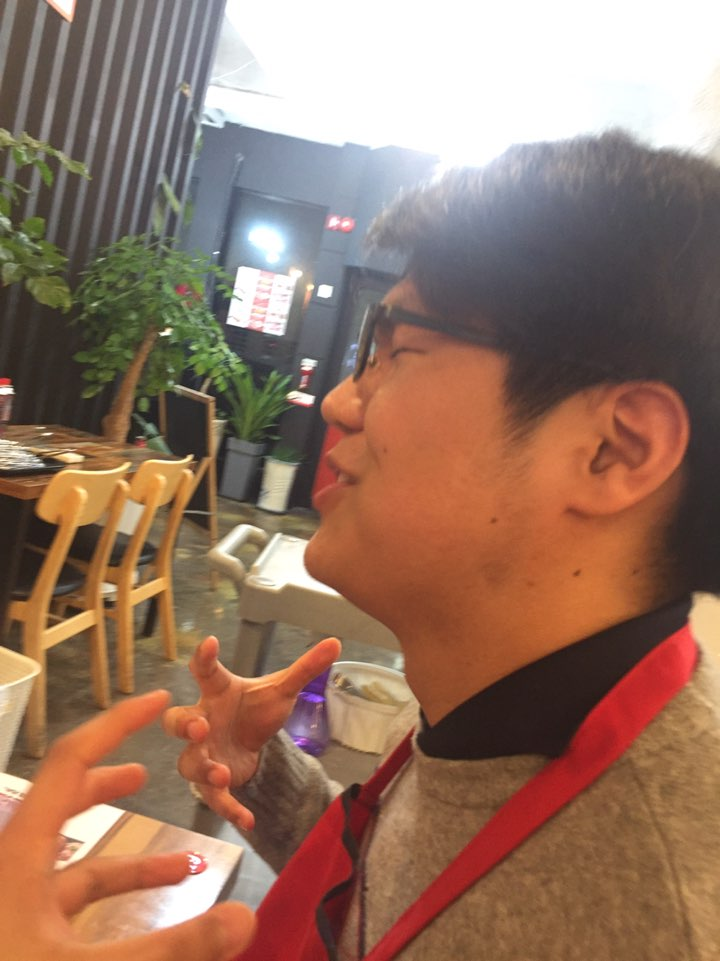
- 사진제공 유재훈 -
4. 자신의 직장에서 업무를 보는 모습이다. 베태랑이라 여유가 느껴진다.
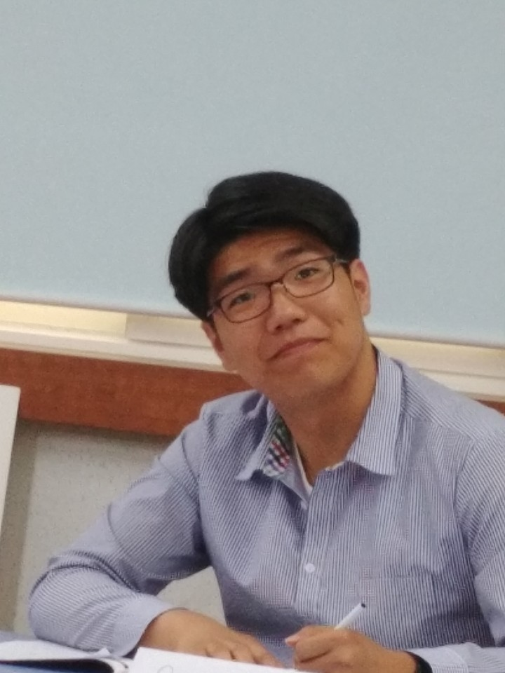
- 사진제공 유재훈 -
@추가 가능한 기능 : 동영상, 타 사이트를 이곳에서 보는 것도 가능. 댓글, 채팅 등